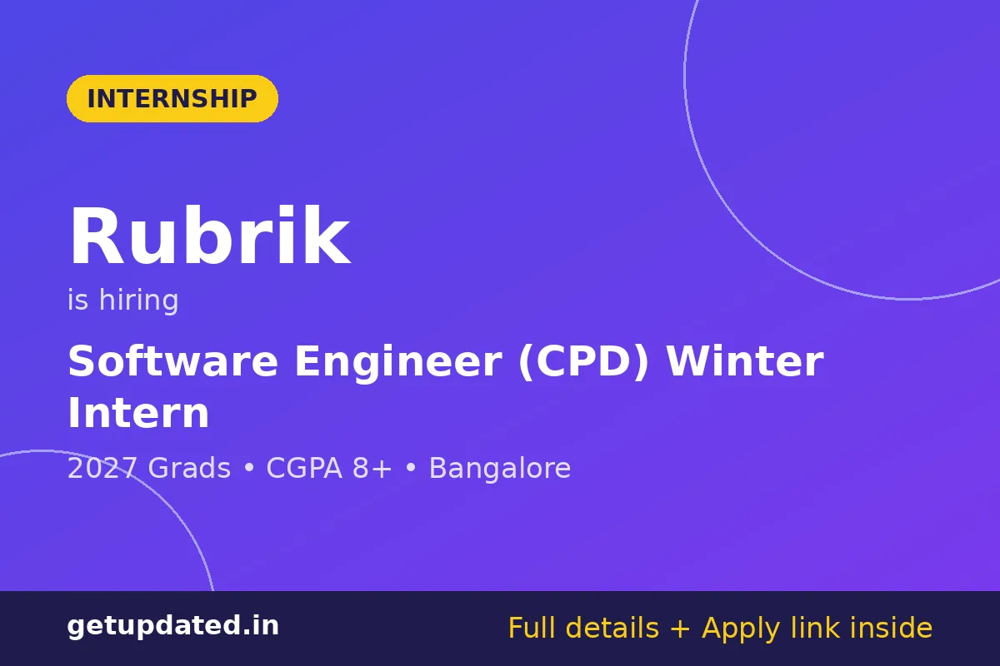
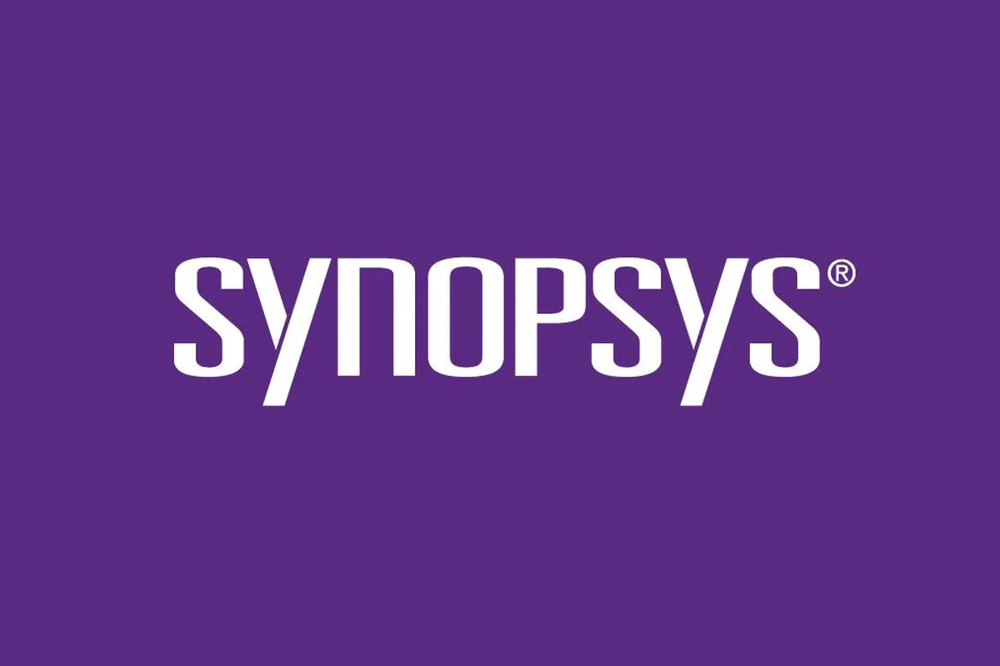

The Indian Air Force has opened AFCAT 01/2027 online applications for graduates who want to become commissioned officers in the Flying Branch and the Ground Duty (Technical and Non-Technical) branches. According to the official AFCAT portal, applications opened on 12 November 2026 and close on 11 December 2026 at 2330 hrs. The courses are meant to begin in January 2028.
AFCAT is one of the best routes into the Air Force for fresh graduates and engineers, because no work experience is needed. The notification also covers NCC Special Entry and GATE Score Entry. This guide explains what the official portal confirms, what is reported by secondary sources, and how to prepare.
Apply early
The last date is 11 December 2026, 2330 hrs. The portal usually gets slow near the deadline, so finish your form well before that day.
Table of Contents
- Quick Highlights
- About the Indian Air Force and AFCAT
- Branches and Vacancy Details
- Eligibility Criteria
- Important Dates
- Salary and Pay
- Application Fee
- Selection Process
- How to Apply
- Preparation Plan
- Common Mistakes to Avoid
- Official Links and Final Checklist
- Final Takeaway
- Also Read
- FAQs
Quick Highlights
| Particular | Details |
|---|---|
| Organisation | Indian Air Force (AFCAT Cell, EDCIL) |
| Notification | AFCAT 01/2027 |
| Branches | Flying; Ground Duty (Technical); Ground Duty (Non-Technical) |
| Special entries | NCC Special Entry and GATE Score Entry |
| Application start | 12 November 2026, 1100 hrs |
| Last date | 11 December 2026, 2330 hrs |
| Course start | January 2028 |
| Experience | Not required |
| Mode | Online through the official AFCAT portal |
Graduates and engineers with no experience can apply until 11 December 2026.
About the Indian Air Force and AFCAT
The Indian Air Force is the air arm of the Indian armed forces. The Air Force Common Admission Test (AFCAT) is its entry exam for officers who join through graduation rather than through the NDA after Class 12. The AFCAT portal is run by the AFCAT Cell, and the test is held twice a year.
Officers selected through AFCAT are trained and commissioned into the Flying or Ground Duty branches. The official portal describes Flying as fighter, helicopter or transport pilot roles, and Ground Duty as technical roles plus non-technical roles that manage human and material resources.
Branches and Vacancy Details
The official portal lists three main groups. Flying Branch covers pilots. Ground Duty (Technical) has sub-branches that depend on your engineering qualification. Ground Duty (Non-Technical) covers administration, logistics and similar roles. Secondary sources list Weapon Systems, Administration, Logistics, Accounts, Education and Meteorology under the non-technical group.
The official pages we could read do not give a branch-wise vacancy table. The Air Force says vacancies are tentative and can change with requirements, so check the detailed notification for the final numbers.

Eligibility Criteria
Eligibility differs by branch. The points below are reported by a secondary news source and match the usual AFCAT pattern. Confirm each one against the official notification on the AFCAT portal before applying.
- Flying Branch: Class 12 with Physics and Mathematics, plus a 3-year degree in any discipline or a 4-year B.E/B.Tech.
- Ground Duty (Technical): Class 12 with Physics and Mathematics, plus an engineering degree in the relevant branch.
- Ground Duty (Non-Technical): A recognised graduate degree for most posts. Accounts, Education and Meteorology have their own subject requirements.
- Age (as on 1 January 2028, reported): 20 to 24 years for Flying, and 20 to 26 years for Ground Duty.
- Marital status (reported): Unmarried at the start of the course.
- Physical and medical standards apply and are listed on the official portal.
Check the exact marks rule
Minimum percentage requirements and age relaxation for each branch are in the official notification. Read them carefully, because a wrong branch choice can get your application rejected.
Important Dates
| Event | Date |
|---|---|
| Online applications open | 12 November 2026 |
| Last date to apply | 11 December 2026 (2330 hrs) |
| Online exam | Reported as 31 January 2027 (confirm on the portal) |
| Courses begin | January 2028 |
The exam date comes from a secondary source, so check your admit card and the official portal for the final schedule.
Salary and Pay
The official portal has a separate Pay and Allowances page, which we could not read in full. We are not quoting a figure here. Officers are paid under the military pay structure, with allowances and benefits. Open the Pay & Allowances and Benefits pages on the AFCAT portal for the exact numbers.
Application Fee
The fee was not visible on the official pages we read. A secondary site reports a fee for the AFCAT entry and no fee for NCC Special Entry and GATE Score Entry, but treat this as unconfirmed. You will see the exact fee and payment method on the official application form.
Selection Process
The official portal says selection depends on written tests, an interview, a medical fitness test and an All India merit list.
- Online AFCAT written test: It usually covers General Awareness, Verbal Ability in English, Numerical Ability, and Reasoning and Military Aptitude. Technical branches also take the Engineering Knowledge Test (EKT).
- AFSB interview: Candidates who clear the written test are called to an Air Force Selection Board for psychological tests, group tasks and an interview.
- Pilot Aptitude Battery Test: Flying Branch candidates usually take this test as well.
- Medical examination: Candidates recommended by the board go through a medical test.
- Merit list: Final selection is based on the All India merit list.

How to Apply
- Open the AFCAT portal through the official link in the Official Links section below.
- Read the notification and the pages on qualification, medical standards and terms and conditions.
- Register or log in on the AFCAT 01/2027 candidate login.
- Fill in your personal, educational and branch preference details carefully.
- Upload the documents asked for and pay the fee if it applies to you.
- Submit the form before the deadline and save a copy of the confirmation.
For help, the AFCAT Cell lists a helpline at +91-9513252077 and an email, afcathelpdesk@edcil.co.in, Monday to Saturday, 0900 to 1800 hrs.
Preparation Plan
Start with the basics. Read the syllabus, then solve the model question paper and the online mock test available on the portal. Aim for a steady daily routine for each section: English (reading and grammar), arithmetic and data, reasoning, and current affairs and static general knowledge.
Engineering graduates applying for technical branches should also revise core subjects for the EKT. Flying aspirants should start working on fitness and eyesight care early, because medical standards are strict. Take timed mock tests every week and analyse your wrong answers.
Prepare for the AFSB early
Many candidates focus only on the written test. Practise group discussions, speaking confidently and building leadership examples from college life well before your interview call.
Common Mistakes to Avoid
- Applying at the last minute and facing portal slowdowns.
- Choosing a branch you do not qualify for by degree or marks.
- Relying on coaching-site summaries instead of reading the official notification.
- Ignoring medical standards until the final stage.
- Entering wrong details that do not match your certificates.
Official Links and Final Checklist
Before you submit, check this list:
- Your degree and Class 12 subjects match the branch.
- Your age is within the limit as on the reference date.
- You have read the medical standards.
- Your details match your certificates.
- You have saved the confirmation page.
Final Takeaway
AFCAT 01/2027 is a strong chance for graduates and engineers to join the Indian Air Force as officers without any prior experience. The window is short, closing on 11 December 2026, so read the notification, pick the right branch and apply through the official link in the Official Links section above. Then begin mock tests right away.
Also Read

Rubrik Hiring Software Engineer (CPD) Winter Intern 2027 in Bangalore
Read now →
ONGC Apprentice Recruitment 2026: 3,047 Posts — Eligibility, Stipend, NATS/NAPS Dates & How to Apply
Read now →
Synopsys Hiring Formal Verification Intern 2026: 12-Month Internship in Bengaluru for ECE/EEE Students
Read now →
RapidClaims Hiring Freshers 2026: SDE Intern (6 Months, On-site Bengaluru)
Read now →Browse all latest jobs & updates →
FAQs
1. What is the last date for AFCAT 01/2027?
Online applications close on 11 December 2026 at 2330 hrs, as shown on the official AFCAT portal.
2. When did AFCAT 01/2027 applications start?
Applications opened on 12 November 2026 at 1100 hrs.
3. Is work experience required?
No. AFCAT is an entry for fresh graduates and engineers, so no prior experience is needed.
4. Which branches are covered?
Flying Branch, Ground Duty (Technical) and Ground Duty (Non-Technical), plus NCC Special Entry and GATE Score Entry.
5. What is the age limit?
Secondary sources report 20 to 24 years for Flying and 20 to 26 years for Ground Duty as on 1 January 2028. Confirm this in the official notification.
6. How are candidates selected?
Selection is through written tests, an interview, a medical fitness test and an All India merit list.
7. When does the course start?
Courses for AFCAT 01/2027 are meant to start in January 2028.
8. Where can I get help with the application?
The AFCAT Cell helpline is +91-9513252077 and the email is afcathelpdesk@edcil.co.in, Monday to Saturday, 0900 to 1800 hrs.